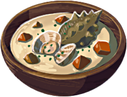

Snail Chowder

Description
The pleasant texture and flavor of snails combine with butter and milk in a rich soup.
Effect: Recover hearts and stealth up.
Ingredients
- [Sneaky] Snail
- Butter
- Milk
- Wheat
Steps
- Get close to a cooking pot
- Select the ingredients from your inventory, then select "Hold"
- Walk up to the cooking pot until you get an interative prompt
- Select "A" to cook and enjoy your tasty meal